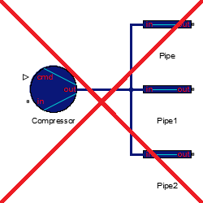
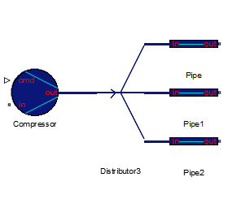
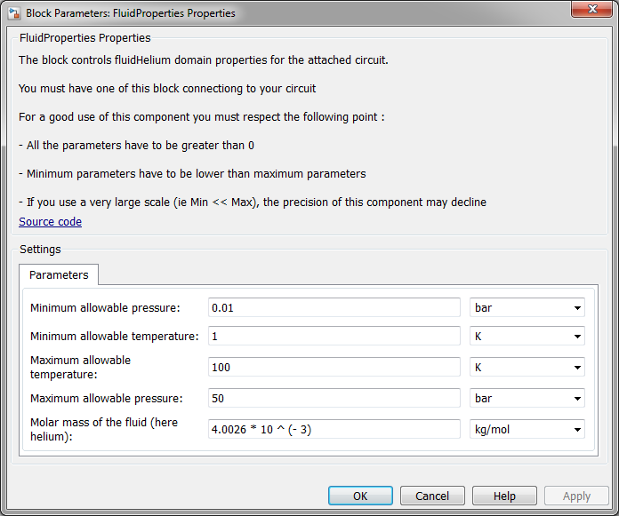

2.2. Create your model 
a. Block connection
You can implement all the blocks of the library in your
schema, but you have to respect connection rules :
A component can provide or need the following physical data
at its ports:
- Mass flow
- Mass flow and Temperature
- Pressure
- Pressure and Temperature
- Temperature
Notice that a component always provides only one or two
physical data at its ports (never zero or three).
And it can't provides mass flow and pressure on the same port.
For more information about the physical data need and
provide by each components, pleas have a look at
the elements section..
So if you want to connect two blocks, you have to be sure
that they are compatible.
By compatible it means that the connection of the two blocks
should define all the three physical data.
As example, if you connect the outlet of a pipe (that provide
pressure and temperature) to an inlet of a valve
(that provide mass flow), the connection is correct,
because mass flow, pressure and temperature are define in
the connection.
But if you try to connect the outlet of a pipe (that
provide pressure and temperature) to the inlet of an
other pipe (that provide pressure), there is two problems:
pressure is define twice (by the outlet of one pipe and
the inlet of the other), and mass flow is not define.
When you will try to simulate your plant, the solver will
display an error.
b. Nodes
In many cases you want to connect three elements to the same
one, or on the other way, connect an element to more than
one.
Here is an example of what you mustn't do :

In this example, the three pipes are directly connected to
the compressor.
But according to the previous section, in this connection,
the pressure is define three times : once/pipe.
The right way to do this kind of connection is describe in
the following example

Here there is an other block : the distributor, this block
allows you to connect one block to multiple blocks
If you want more information about multiple connection
please have a look at
the mixer
and
the distributor.
c. Require components
There is two components that you must connect to each of your
circuits :
Fluid properties
This block allowed you to propagate all the parameters
of the fluid through the circuit.
You can connect this block on any wire of your circuit, the
placement of this component is not important.
The following picture represent the graphical interface of
this component:

You can set the range of pressure and temperature allowed
on your physical environment.
For more information about this block, please refer to the
fluid Properties section.
Solver configuration
As for the fluid properties block, the placement of this
block is not important.
This is a block from the Simscape toolbox, for more
information about it, please have a look at
this link
©2015 The PI-02